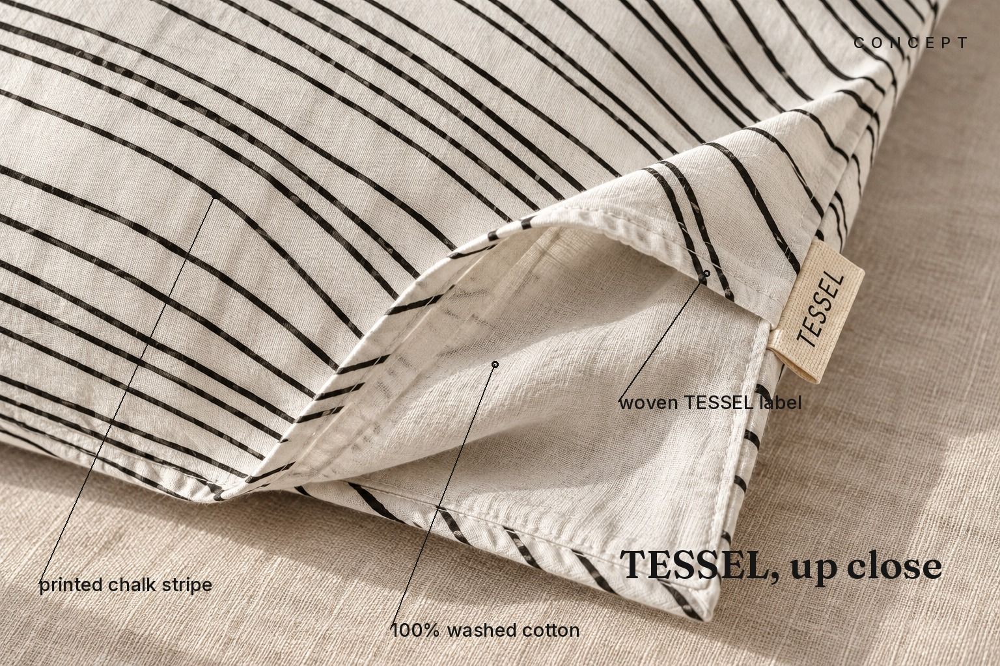
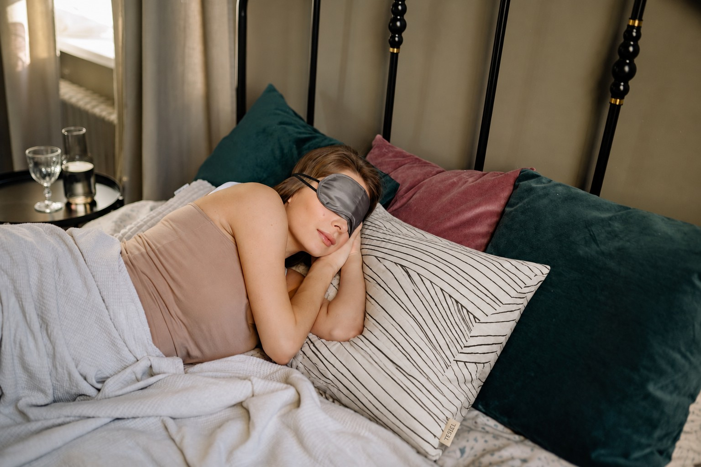
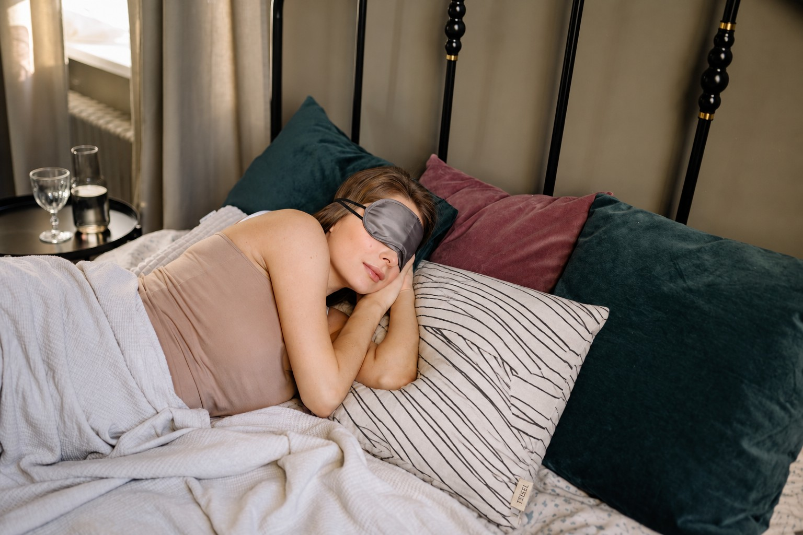

✧ ( concept / spec work )
Same pillow.
New scene.
Stripes, soft light, a label that should hold.
One fictional bedding brand, one stock reference. A full path through fidelity, controlled edits, reruns and page layouts. Honest checks included. All concept work, not client projects.

inside this case study
01 brief / 02 fidelity / 03 real photos / 04 edits / 05 repeatability / 06 placements
Brief to result
Invented brief, written the way a marketing partner would send it.
Objective: lift add-to-cart on the TESSEL striped pillow PDP and give paid social 3 ad angles.
Audience: 28-45, buys bedding online, cares about feel and look.
Placements: PDP hero (16:9 desktop, 4:5 mobile), 1:1 and 9:16 social, wide banner.
Must hold: stripe pattern, woven TESSEL label, honest "concept" tag.
Decisions I made
- Daylight bedroom for the PDP hero: calm, pattern reads clearly, label visible.
- Warm evening scene for lifestyle and one ad: emotion, not specs.
- Macro detail for the third ad: proves the weave and the label.


Product fidelity
The pillow has to stay the same product in every scene. Branded source photo on the left, generated scene on the right.

Photo by Miguel Hernandez on Unsplash, free to use under the Unsplash License (no permission or credit needed; checked on the photo page and in Unsplash's terms). I added a fictional woven label "TESSEL". No real brand marks anywhere. Photo page
| Check | Hero | Lifestyle | Detail |
|---|---|---|---|
| Stripe pattern direction | Pass | Pass | Pass |
| Stripe spacing exact | Close, not exact | Close, not exact | Close |
| TESSEL label present | Pass | Pass | Pass |
| Pillow shape | Pass | Pass | Pass |
The prompts behind these frames (verbatim)
One annotated frame for the PDP detail section: printed chalk stripe, 100% washed cotton, woven TESSEL label. Generated render, callouts typeset in code, CONCEPT tag baked in.

On real photos
The TESSEL pillowcase composited into real human photos (base photos: Pexels, free for commercial use, modification allowed). The person, room and light stay exactly as the photographer shot them; only the pillow is replaced. Every attempt is shown with the exact prompt used, failures included.
Tessel-1 - kept on the first attempt
Kept: pattern, tag and fabric shadows hold.
Base photo: KATRIN BOLOVTSOVA, Pexels
Tessel-2 - kept on the first attempt
Kept: gentle waves, tag readable at the corner.
Base photo: KATRIN BOLOVTSOVA, Pexels
Tessel-3 - two attempts: first failed, second kept

The black lines bent into sharp chevrons and zigzags at the pillow creases instead of gentle parallel waves.

Kept: gentle waves hold. A slight fabric-following bend at the deepest fold remains.
Base photo: Yan Krukau, Pexels
Edit control
Five steps from one source image. Each step names what was wrong and what I asked for.


Repeatability
Same prompt and same reference, run 4 more times. Pass means the pattern and the readable label both hold.


Place this exact [product], with the same [pattern], proportions and [label], on [scene], [light], photorealistic commercial photo, [focal rule]. Reference: branded source image. Keep the reference fixed, change only the bracket parts.
Result: pattern and composition hold in 4 of 4, label readable in 0 of 4 (tiny or garbled). Fix for a real project: add the label as a second reference or paint it in at the finishing step.
Ads
Three concepts, three sizes each. Headlines and offers are invented for the exercise.
| Concept | Objective | 1:1 | 4:5 | 9:16 |
|---|---|---|---|---|
| Comfort promise | Click to PDP |  |  |  |
| Evening ritual | Trial sign-ups |  |  |  |
| Craft detail | Consideration |  |  |  |
Also: two static ads I made myself in a hiring assignment are linked on request (not shown here).
Campaign banners from the people shots
The same composites set as ready ad units in 6 standard sizes. Headline, price and CTA are invented for the exercise; text is typeset with real fonts (Fraunces + Inter), not model-rendered letters. CONCEPT tag baked into every size. Base photos: KATRIN BOLOVTSOVA (Pexels).
PDP and landing page
Responsive HTML layouts using the images above. I will rebuild them in Figma as the handoff version.
Open PDP (desktop + mobile)Open landing page
Placement
One hero, four crops. Focal point is the pillow and the label.


White headline on a bottom gradient scrim, checked on the three ads: readable at full size and at 120px thumbnail width (headline survives, small CTA text does not).
The label drops out of the 9:16 crop and is too small to read at thumbnail size. Fix: ship the detail shot as the 9:16 hero.
Design system and handoff
| Paper | #F4F4F2 |
| Ink | #161616 |
| Accent | #FFE45C |
| Type | Roboto + Roboto Mono, responsive type scale |
| Spacing | 8, 12, 20, 28, 36, 64, 112 |
| CTA | Accent fill, 2px ink border, hard shadow; hover: shadow 0 |
| Use | Size | Format |
|---|---|---|
| PDP hero desktop | 1600x900 | WebP + JPG fallback |
| PDP hero mobile | 1080x1350 | WebP + JPG |
| Social | 1080x1080 / 1920 | JPG q84 |
| Naming | Tessel_pdp_hero_16x9_v1.jpg | |